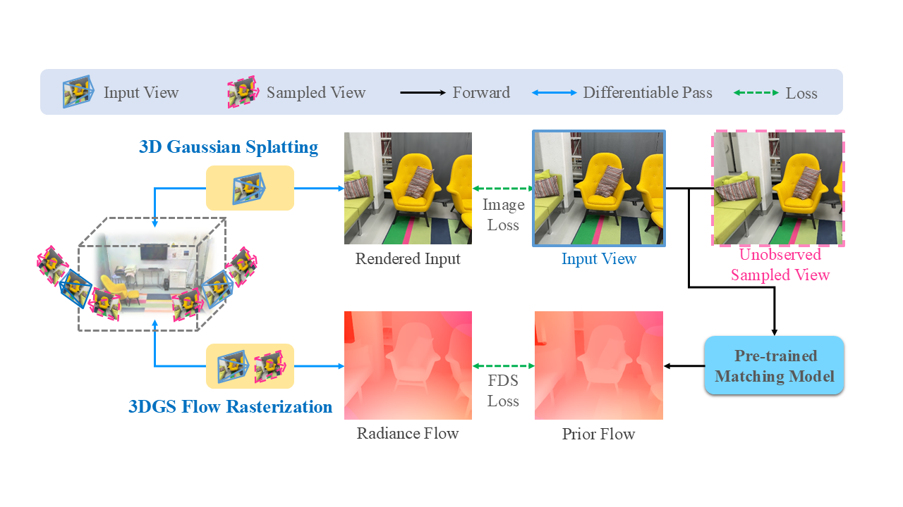
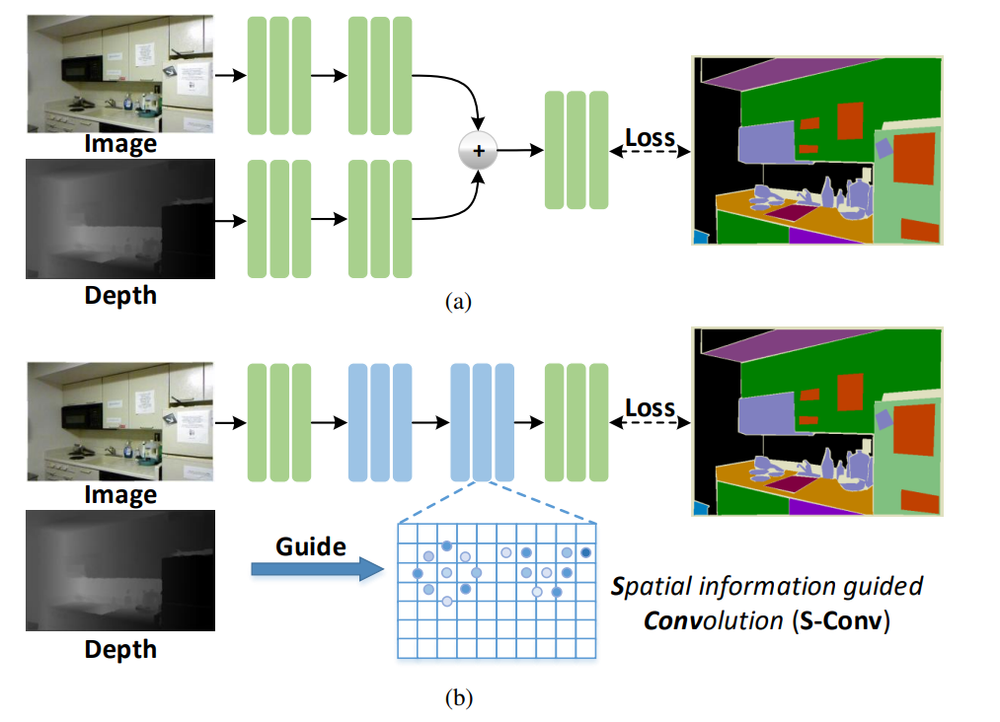
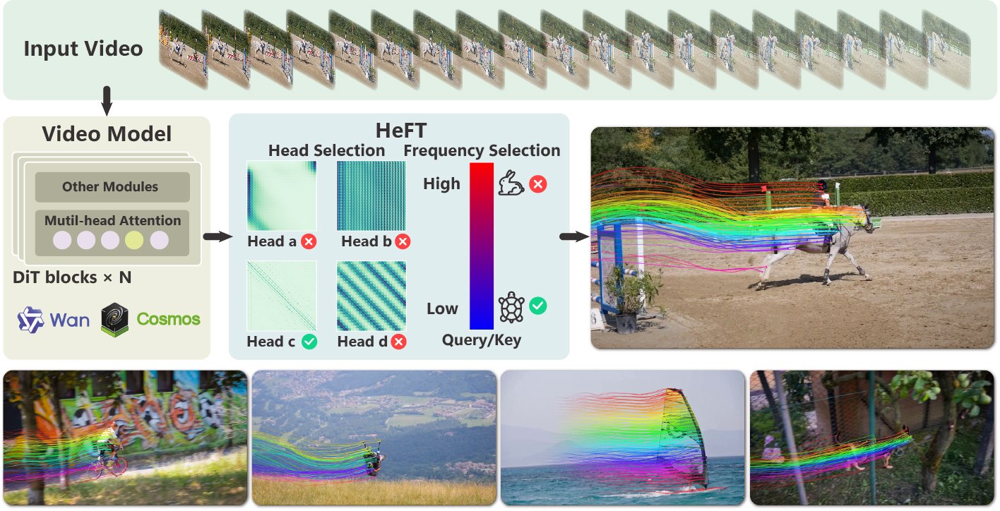
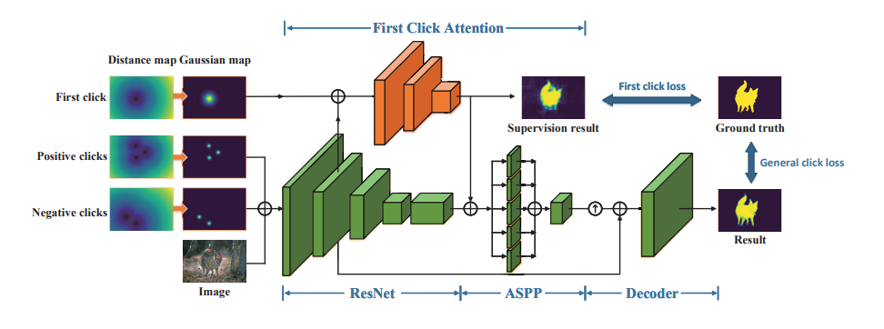

Biography
I am a PhD student at Nanjing University, supervised by Prof. Yao Yao in 3DV-lab. I am also a member of CITE lab, working closely with Prof. Qiu Shen and Prof. Xun Cao.
Before that, I was a master student at Nankai University, supervised by Prof. Ming-Ming Cheng.
My research interests include 3D and motion Reconstruction.
Research Highlights

Flow Distillation Sampling
ICLR 2025
Regularizing 3D Gaussians with Pre-trained Matching Priors
View ProjectPointrix
Open Source
A differentiable point-based rendering library supporting 3D Gaussian Splatting
View Project
SG-Conv
IEEE TIP 2021
Spatial Information Guided Convolution for Real-Time RGBD Semantic Segmentation
View Project
Publications
Representative works are highlighted (* denotes equal contribution)
|
|
SpatialVID: A Large-Scale Video Dataset with Spatial Annotations
ArXiv preprint 2505.17412
|
|
 |
Denoise to Track: Harnessing Video Diffusion Priors for Robust Correspondence
ArXiv preprint 2512.04619
|
|
Flow Distillation Sampling: Regularizing 3D Gaussians with Pre-trained Matching Priors
ICLR 2025, Accepted
We propose Flow Distillation Sampling to regularize 3D Gaussians with pre-trained matching priors, improving reconstruction quality.
|
|
|
Pointrix: A differentiable point-based rendering library supporting 3D Gaussian Splatting and beyond
Arxiv Pre-print 2024 (WIP)
A differentiable point-based rendering library supporting 3D Gaussian Splatting and beyond.
|
|
|
Spatial Information Guided Convolution for Real-Time RGBD Semantic Segmentation
IEEE TIP, 2021, SCI-1, CCF-A
We propose spatial information guided convolution for real-time RGBD semantic segmentation.
|
|
|
 |
Interactive Image Segmentation with First Click Attention
IEEE CVPR, 2020, CCF-A
Interactive image segmentation with first click attention mechanism for improved user interaction.
|
© Lin-Zhuo Chen | Last updated: